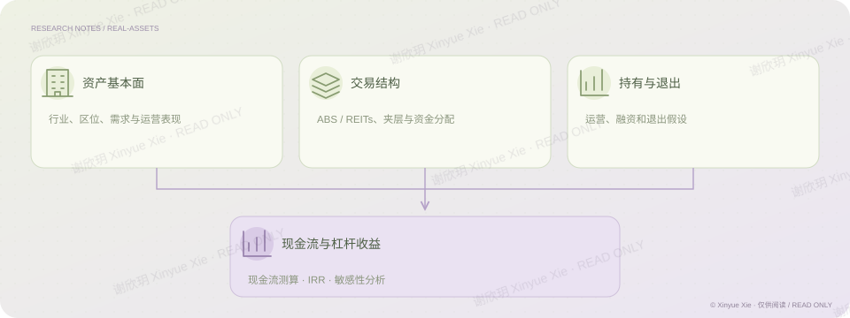

弘毅投资 · 实习项目
不动产：把资产放回现金流
一项资产的吸引力，如何落实到现金分配？
PROJECT NOTES / THE BIG PICTURE
研究思路

01核心判断
在不动产投资实习中，我从行业、区位和需求分析进入具体项目，并将运营与退出假设、融资条件及夹层结构连接到现金流模型。工作覆盖物流资产和商改住项目，既测算持有期间的分配，也比较不同持有期限下的杠杆回报。这个项目体现的是把资产判断转化为交易层面的收益测算，并通过敏感性分析理解结果依赖哪些条件。
02分析过程
从行业、区位、需求与运营表现分析资产质量。 把交易结构和融资条件放进期间现金流与分配安排。 比较运营六年与持有至到期的测算，并检验运营、融资和退出假设。
相关经历弘毅投资 · 不动产
理解商业
将区位、需求和运营表现转成具体资产判断。
建立模型
连接交易结构、融资、分配和退出情景。
谢欣玥 Xinyue Xie · 研究作品仅供在线阅读
← 返回全部作品